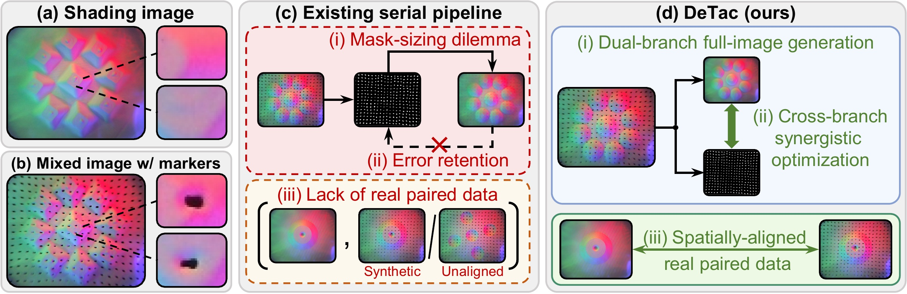
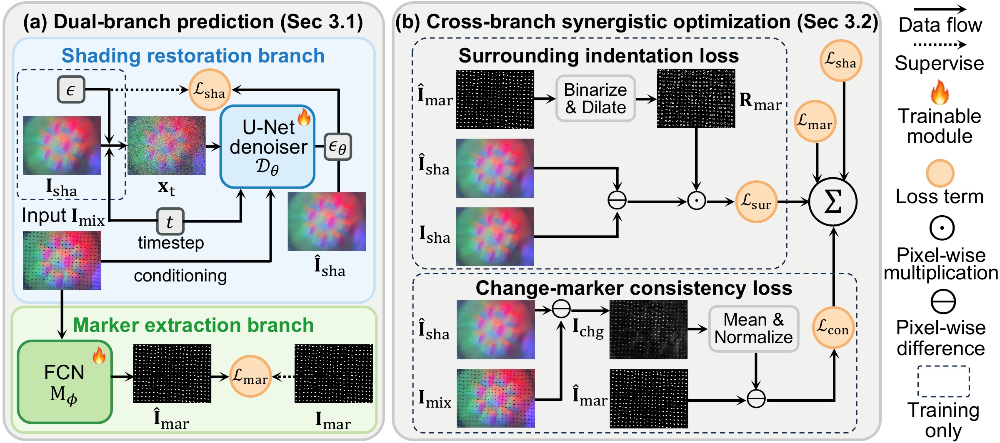
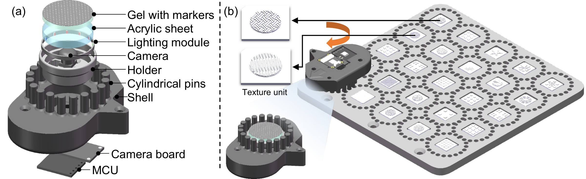
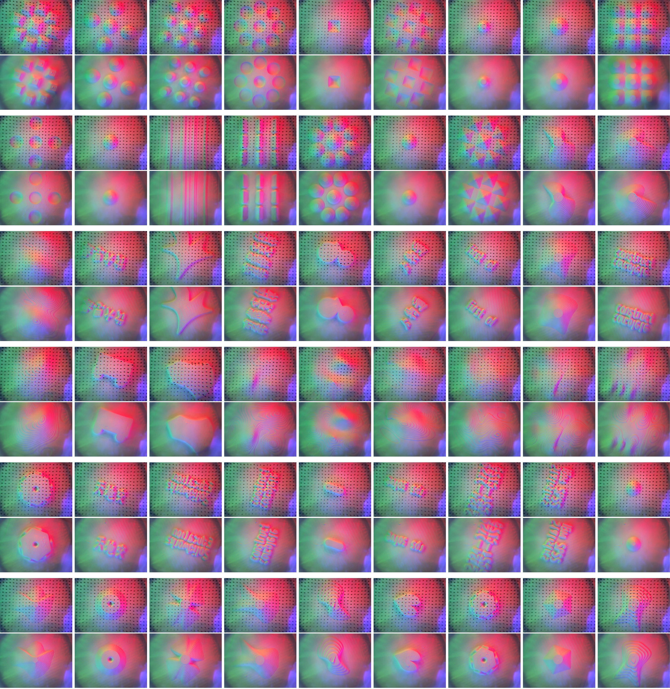
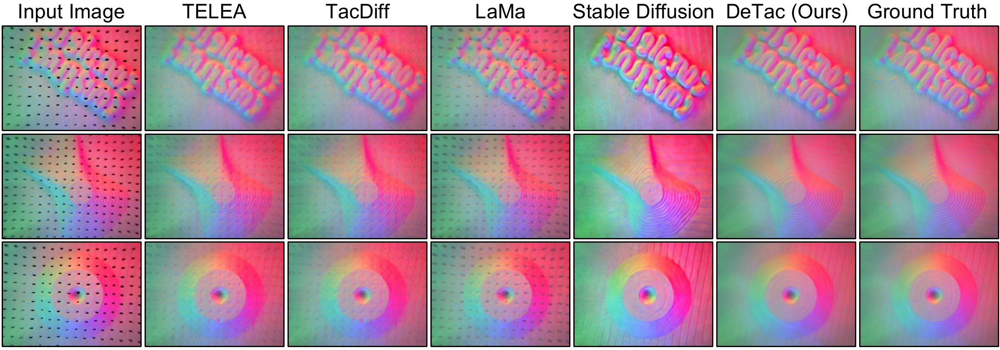
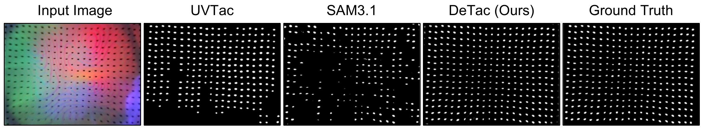
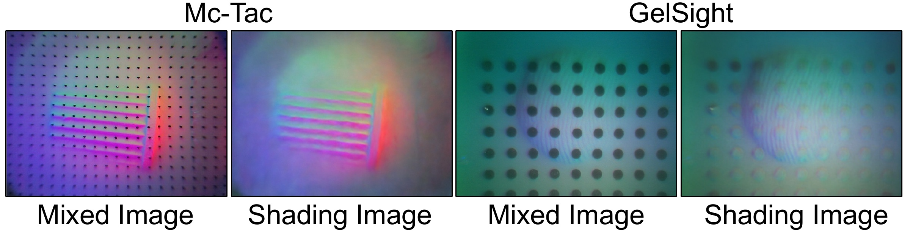
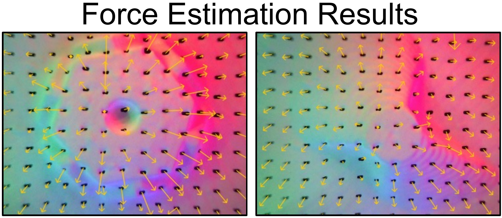

Abstract
Vision-based tactile sensors enable fine-grained perception for dexterous robotic manipulation, but current marker-based designs tightly couple surface texture and contact force signals within a single observation. Existing data-driven decoupling methods rely on serial mask-based inpainting, which suffers from mask-sizing dilemmas caused by physical indentation effects, error retention, and lack of real paired data for supervision. To address these challenges, we propose DeTac, a novel dual-branch generative framework that concurrently extracts clean shading and marker images from a single mixed tactile image. DeTac leverages full-image synthesis to naturally bypass mask dependency and introduces a cross-branch synergistic optimization that enables mutual supervision, effectively preventing error retention. Furthermore, we construct a strictly aligned, real-world paired tactile dataset using custom hardware to provide high-quality supervision. Extensive experiments demonstrate that DeTac achieves state-of-the-art decoupling accuracy, significantly facilitating downstream surface reconstruction and force estimation tasks while exhibiting cross-sensor generalization.
Motivation
Embedded markers enable force estimation but obscure surface texture and introduce indentation artifacts in the surrounding elastomer. Serial inpainting pipelines face a mask-sizing dilemma: small masks leave artifacts, while large masks discard useful texture. Localization errors also propagate into restoration, and synthetic training pairs miss real physical effects.
DeTac jointly recovers shading and markers through full-image generation and cross-branch supervision, trained on aligned real-world pairs.


Method
A dual-branch generative framework jointly restores surface shading and extracts markers for tactile perception.


Dual-branch prediction. A conditional diffusion model restores the full shading image, while a lightweight convolutional network extracts a soft marker image from the same observation. This avoids predefined inpainting masks and preserves both surface geometry and marker displacement information.
Cross-branch optimization. A surrounding indentation loss focuses restoration on marker neighborhoods. A change-marker consistency loss links the restored appearance changes to marker locations, allowing the two branches to guide one another.
Dataset
1,080 paired tactile samples · 54 objects · 20 contact poses per object


We capture aligned shading and mixed images on the same sensor before and after marker fabrication. A dedicated mechanical structure keeps contact poses repeatable, providing real paired supervision that includes marker-induced indentation effects.


Results
Shading restoration
DeTac suppresses marker traces and surrounding indentation artifacts while preserving fine surface texture. Restoring the full image produces shading closer to the ground truth; the ablation study confirms the importance of supervision around marker neighborhoods.


Marker extraction
DeTac recovers complete marker patterns with precise boundaries for displacement tracking. Restoration-induced appearance changes help refine marker locations, and the ablation results support the benefit of cross-branch supervision.


Cross-sensor generalization
DeTac restores high-quality shading under different internal illumination and on a different sensor type, demonstrating cross-sensor generalization beyond the appearance of the training sensor.


Force estimation
The extracted markers preserve contact-induced displacement for force estimation. More precise marker localization translates into more accurate force estimates, with the lowest mean force error among the evaluated inputs.


Surface reconstruction
Restored shading reduces marker-induced geometric distortions in photometric stereo reconstruction. The resulting meshes better capture the contact surface, consistent with the lower reconstruction errors reported in the paper.
Fabric classification
Using the same classifier trained on markerless tactile images, DeTac-restored shading improves fabric classification without retraining the classifier. Classification relies solely on tactile signals, with overall accuracy increasing from 50.0% to 84.4%.
BibTeX
@misc{zhang2026detacdualbranchdecouplingtexture,
title={DeTac: Dual-branch Decoupling of Texture and Force Signals in Vision-Based Tactile Sensors},
author={Zhirui Zhang and Yunkai Tang and Jiahang Li and Fan Fei and Jinnuo Zhang and Kairan Ding and Jieji Ren and Yandong Guo and Boxin Shi},
year={2026},
eprint={2610.16463},
archivePrefix={arXiv},
primaryClass={cs.RO},
url={https://arxiv.org/abs/2610.16463},
}